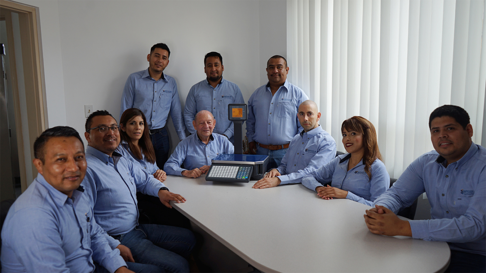
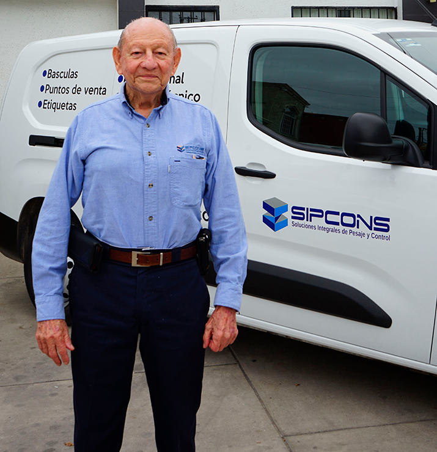
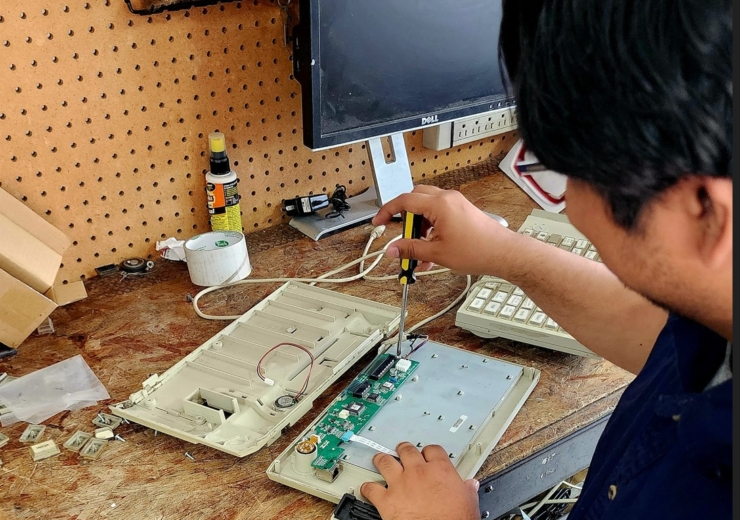
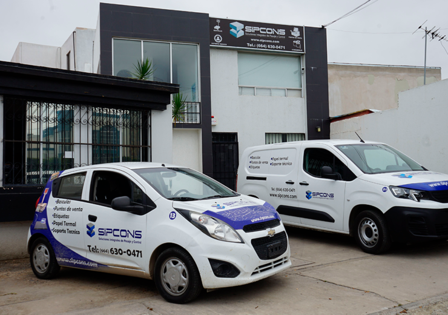

46 años brindando confianza con básculas comerciales, industriales y sistemas de punto de venta de alta precisión en Baja California.
Desde 1980 evolucionamos junto con el mercado del noroeste de México, del control de pesaje a los ecosistemas completos de punto de venta y, hoy, a los equipos con inteligencia artificial.
Nace SIPCONS con básculas comerciales e industriales y los primeros sistemas de punto de venta para el comercio de la región.
Llevamos venta, instalación y servicio a todo Baja California y al noroeste del país.
Incorporamos el software Mr. Tienda® y Mr. Chef® a nuestras soluciones de automatización comercial.
Implementamos equipos de pesaje con inteligencia artificial que ya operan en sucursales de nuestros clientes.
Proporcionar soluciones integrales y de alta calidad en la venta y servicio de básculas, puntos de venta, redes, computadoras y consumibles. Nos comprometemos a satisfacer las necesidades de nuestros clientes con productos confiables y servicios excepcionales que contribuyan al éxito y la eficiencia de sus operaciones, siendo su socio de confianza en soluciones tecnológicas y de gestión empresarial.
Convertirnos en líderes reconocidos como proveedores confiables de soluciones tecnológicas para empresas, siendo la primera opción de nuestros clientes. Buscamos expandir nuestra presencia a nivel nacional e internacional, manteniendo la calidad, la innovación y el servicio al cliente como pilares de nuestro éxito continuo.
Creemos en la solución total de necesidades: no solo vendemos un producto, resolvemos problemas reales. Actuamos con eficiencia y puntualidad, respetando el tiempo de nuestros clientes. Y abrazamos la innovación constante, adaptándonos a las nuevas tecnologías para mantener a las empresas del norte de México a la vanguardia.

Detrás de SIPCONS hay un equipo de ingenieros y técnicos con experiencia real en cientos de implementaciones. Nuestro liderazgo mantiene el compromiso de excelencia técnica que nos ha distinguido por 46 años.
Ingenieros y técnicos certificados, no un call center genérico.



La exactitud no es opinión: se calibra y se demuestra.
Trazabilidad metrológica en cada equipo que calibramos, con reporte de resultados.
Instalaciones alineadas a la normatividad mexicana vigente para instrumentos de pesaje comercial.
Representamos marcas líderes con soporte de fábrica y refacciones originales.
Marcas que representamos


| SIPCONS | Proveedor genérico / en línea | |
|---|---|---|
| Calibración certificada en sitio | ✓ | Rara vez |
| Refacciones originales en stock | ✓ | Sujeto a importación |
| Visita técnica en Baja California | ✓ | No disponible |
| 46 años de trayectoria local | ✓ | Variable |
| Equipos y mano de obra garantizados | ✓ | Rara vez |
| Capacitación incluida al instalar | ✓ | Rara vez |
Habla con nuestro equipo y descubre por qué somos el referente en Baja California.